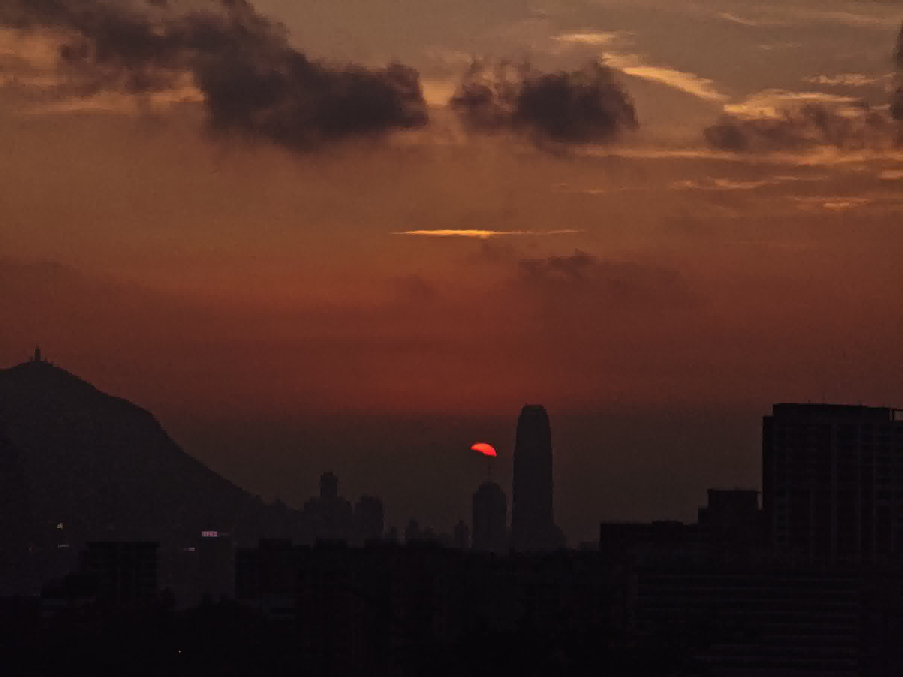

香港中文大学（深圳）·祥波书院·海洋影像厂
2026 香港国庆烟花汇演
NATIONAL DAY FIREWORKS · VICTORIA HARBOUR
国庆维港烟花路线
四条观赏路线，两条实测走法。从过关到站位，一步一图。
了解海洋影像厂
祥波书院官网

封面摄影：杨天瑞 太平山 · 2026.09.24
4条
观赏路线
2条
实测走法
27张
步骤实拍
2020年
影像厂成立
这是一份为 2026 年香港国庆烟花汇演整理的观赏路线攻略。 全部内容都在回答同一个问题：站在哪里看，怎么去，花多少钱。
#汇演概况
国庆烟花汇演通常于 10 月 1 日晚在维多利亚港举行，由香港特区政府文化体育及旅游局统筹。烟花自维港海面躉船发放，因此视角可以分成两类：
- 九龙尖沙咀沿岸 —— 正对发放区的正面视角，距离最近、声势最盛；
- 港岛太平山、宝马山一侧 —— 居高临下的俯瞰视角，能看到烟花与两岸天际线同框。
#本页怎么读
- 四条路线 —— 从"最省事"到"视野最好"，先横向认识全部选项，再挑一条；
- 两条具体路线 —— 海洋影像厂当天实际采用的走法，一步一图，照着走即可。之所以写得"非最优"，是因为它换取了最不容易出错；
- 支付方式 / 八达通 —— 过关前先解决钱怎么付，比到了现场再想办法省事得多；
- 出发前检查清单 —— 可以直接勾选，勾选状态会存在你自己手机上。
#路线速览
路线一
海运大厦露天停车场观景台
买票入场 · 最简单便捷
- 优势
- 无需提前占位、正面视角、有洗手间与餐饮
- 代价
- 开销最大，需购票且名额有限
路线二
尖沙咀及周边热门观赏点
免费 · 未实地踩点
- 优势
- 交通最方便，选择最多
- 代价
- 人流量极大，需极早占位
路线三
太平山观景台
免费 · 无须爬山
- 优势
- 居高俯瞰，开销小，有公共交通直达
- 代价
- 山顶同样人多，返程排队时间长
路线四
宝马山观景台
免费 · 需爬山
- 优势
- 视野最好，几乎是免费赏烟花的最佳位置
- 代价
- 路线复杂、需爬山，山路无路灯
#两条具体路线，怎么选
两条都是海洋影像厂实地走过的路线，取舍很清楚：
- 选太平山，如果你想要最省事：城巴 15 路直达山顶，全程不用爬，代价是山顶人多、返程排队；
- 选宝马山，如果你想要最好的视野且不介意爬一段：需要坐 49M 小巴再走约二十分钟山路，下山没有路灯。
按"省事程度"排序：从花钱买省心，到花体力换视野。
#路线一 · 海运大厦露天停车场观景台
一句话：买张票，站在维港正对面的停车场上层平台看烟花。不用提前几小时占位，也不用挤。
 2026 国庆烟花汇演｜海港城 · Klook 购票页面 · 票价 ¥128 起
2026 国庆烟花汇演｜海港城 · Klook 购票页面 · 票价 ¥128 起
#路线二 · 尖沙咀及周边热门观赏点
一句话：全香港最经典的观赏区，也意味着全香港最难抢的位置。四个点位各有取舍：
- 尖沙咀海滨长廊／星光大道
- 最经典的 C 位正面视角，正对烟花发放区，视野无遮挡，氛围感极佳。但人流量极大。
- 西九文化区艺术公园
- 拥有开阔的大草坪，可以铺上野餐垫边吃边看，人流相对较少（只是相对而已），适合情侣。
- 尖沙咀海滨花园
- 靠近九龙香格里拉酒店，夜景质感好，人比文化中心少一些，方便就近转场吃饭。
- K11 MUSEA 6 楼观景平台
- 在商场内吹海风、拍维港海景与艺术装置同框，出片率极高，不用在户外挤着等。
#路线三 · 太平山观景台
一句话：城巴 15 路直达山顶终点站，下车走一小段就到，是唯一一条不用爬山的免费高处机位。
- 核心：搭乘"山顶"方向的城巴 15 路或其衍生路线（X15 / 15B）至终点站"山顶"，穿过"大富翁梦想世界"，前往太平山观景台。
#路线四 · 宝马山观景台
一句话：视野最好的一条，几乎是免费赏烟花的最佳位置——代价是要走约二十分钟山路，且下山没有路灯。
- 核心：搭乘 49M 小巴，告诉司机师傅要去宝马山，在宝马山半山腰下车。
- 据原始攻略记载，这是海洋影像厂当天所选，可跟随。
#起点：过关后搭东铁线到金钟站
从福田口岸（香港方称落马洲口岸）／罗湖口岸搭乘港铁东铁线到达金钟站。
-
1
C1 出口出站，右拐看到 15 路／X15 巴士的指示牌
 金钟站 C1 出口旁"往巴士站"的指示牌，15／X15 一栏写着"山顶 The Peak"，跟着箭头走
金钟站 C1 出口旁"往巴士站"的指示牌，15／X15 一栏写着"山顶 The Peak"，跟着箭头走
-
2
循着指示前往车站
 循指示牌前往巴士站
循指示牌前往巴士站
-
3
搭乘"山顶"方向的城巴 15 路或其衍生路线（X15／15B）至终点站"山顶"
一路坐到终点站"山顶"，不要中途下车。X15 为特快班次，中途不停站直达。
 站牌上同时列出 15 与 X15，认准"山顶 The Peak"方向
站牌上同时列出 15 与 X15，认准"山顶 The Peak"方向
-
4
认准这辆车：城巴 15 路（山顶探索号）
 车身与车头均标有"山顶 The Peak 15"的城巴双层巴士
车身与车头均标有"山顶 The Peak 15"的城巴双层巴士
#下车之后怎么走
下车后先看这段视频，比读文字直观得多——从山顶巴士总站一路走到太平山观景台：
Route to Victoria Peak Observatory — 从山顶巴士总站步行前往太平山观景台的全程记录
-
5
认准这个短廊
 下车后先找到这条带立柱遮阳棚的短廊，走到尽头就能看见维港
下车后先找到这条带立柱遮阳棚的短廊，走到尽头就能看见维港
-
6
认准这个望远镜
 看到这台投币观景望远镜，就说明方向对了
看到这台投币观景望远镜，就说明方向对了
-
7
到达
 太平山观景台（凌霄阁一带的露天平台），维港两岸尽收眼底
太平山观景台（凌霄阁一带的露天平台），维港两岸尽收眼底
-
8
原路下山
下山按原路返回即可。返程高峰时段山顶巴士排队较长，建议预留时间。
#起点：金钟站换港岛线到天后站
从福田口岸（香港方称落马洲口岸）／罗湖口岸搭乘东铁线前往金钟站之后，换乘港岛线前往天后站。
-
1
A1 出口出站，根据指示向西前往"天后站公共運輸交匯處"（天后站公共运输交汇处），搭乘 49M 小巴
上车时跟司机师傅说一声要去宝马山。
 天后站公共运输交汇处的 49M 小巴，车头显示"天后站 ↔ 寶馬山"
天后站公共运输交汇处的 49M 小巴，车头显示"天后站 ↔ 寶馬山"
#从下车到登山口
-
2
看到"寶馬山花園"（宝马山花园）就准备下车
随后根据司机提醒下车，或者在看到"寶馬山花園"之后下车。
 路边这块"PACIFIC PALISADES 寶馬山花園"石牌就是下车的信号
路边这块"PACIFIC PALISADES 寶馬山花園"石牌就是下车的信号
-
3
向上或下走（取决于下车位置）
认准这块保安控制室的牌子，楼梯就在它旁边，一直爬到楼梯消失为止。
 找到"保安控制室"（Security Control Room），从旁边的楼梯上去
找到"保安控制室"（Security Control Room），从旁边的楼梯上去
-
4
找到绿色栅栏
 路口对面的绿色栅栏，沿红色箭头方向上去
路口对面的绿色栅栏，沿红色箭头方向上去
-
5
走到这道绿色铁门
 认准这道绿色铁闸门，门上贴着公告
认准这道绿色铁闸门，门上贴着公告
-
6
推门
门上有"請順手關門 / Please keep this gate closed"告示，进去后请把门带上。
 门上写着"推 PUSH"，推开即可
门上写着"推 PUSH"，推开即可
-
7
进入
 进门后是绿栏杆围着的缓坡水泥小径
进门后是绿栏杆围着的缓坡水泥小径
-
8
上山（这一段是台阶）
 循台阶往上爬，沿途都有绿色栏杆
循台阶往上爬，沿途都有绿色栏杆
-
9
遇到岔路优先选向上的那一条
 第一个岔路口，选向上的那一条
第一个岔路口，选向上的那一条
-
10
遇到岔路优先选向上的那一条 ×2
这一段是连续上行的石阶，慢慢走。
 再次遇到岔路，依旧选向上的那一条
再次遇到岔路，依旧选向上的那一条
-
11
继续向上
 认准路口的棕色木指示牌（寶馬山道 BRAEMAR HILL ROAD／柏架山道 MOUNT PARKER ROAD／金督馳馬徑 SIR CECIL'S RIDE），沿石阶继续上行
认准路口的棕色木指示牌（寶馬山道 BRAEMAR HILL ROAD／柏架山道 MOUNT PARKER ROAD／金督馳馬徑 SIR CECIL'S RIDE），沿石阶继续上行
-
12
经过观景亭
 途经这座六角观景亭，旁边已能望见维港
途经这座六角观景亭，旁边已能望见维港
-
13
选择右侧的土路
 在岔口选择右侧的土路，不要走左边
在岔口选择右侧的土路，不要走左边
-
14
遇事不决选右边
 遇事不决选右边
遇事不决选右边
-
15
遇事不决选右边 ×2
 遇事不决选右边 ×2
遇事不决选右边 ×2
-
16
认准这块指示牌
 认准"金督馳馬徑觀景台 SIR CECIL'S RIDE VIEWING POINT"全景指示牌，上面标出了维港两岸的地标
认准"金督馳馬徑觀景台 SIR CECIL'S RIDE VIEWING POINT"全景指示牌，上面标出了维港两岸的地标
-
17
到达
 观景台视野：维港与港岛天际线尽收眼底（图为日落时分）
观景台视野：维港与港岛天际线尽收眼底（图为日落时分）
-
18
原路下山
山路无路灯，务必自备手电，并留意同行者脚下。
其他交通工具（巴士（城巴 CityBus／九巴 KMB）、港铁、出租车等）均可使用电子支付中的乘车码：
- 微信 乘车码小程序
- 支付宝 — 出行 — 香港 页面
- 云闪付 "出行·中国香港" 页面
 微信「乘车码」小程序：公交地铁刷码
微信「乘车码」小程序：公交地铁刷码
- 大部分都接受电子支付，但有相当一部分会强制人民币 : 港币 = 1 : 1 支付。
- 少部分只接受八达通甚至现金支付，多为小店老店。
#一句话总结
电子支付（微信／支付宝／云闪付）& 八达通 & 现金 & 其他（如银行卡支付等）都带上，最稳妥。
八达通卡是香港通用的非接触式储值卡，搭车、买东西"嘟"一下就扣钱。
#必要性
经常访港？
- Yes — 可办
- 建议办理电子版，比实体版更方便携带。
- iOS（苹果）：可直接在钱包中添加（Apple Pay）。
- HarmonyOS（华为）：可直接在钱包中添加（Huawei Pay）。
- Android（其余品牌）：下载 Octopus APP 后添加。
- No — 不必
- 八达通 100 HKD / 250 HKD 起充，退卡还会收取手续费。
- 若只是偶尔来一次，直接用乘车码 + 少量现金即可。
关于我们 ABOUT
海洋影像厂
HOCEANIA · 行走之间，光影成诗
香港中文大学（深圳）· 祥波书院旗下学生摄影组织，2020 年成立。
组织页面 ↗
书院官网 ↗